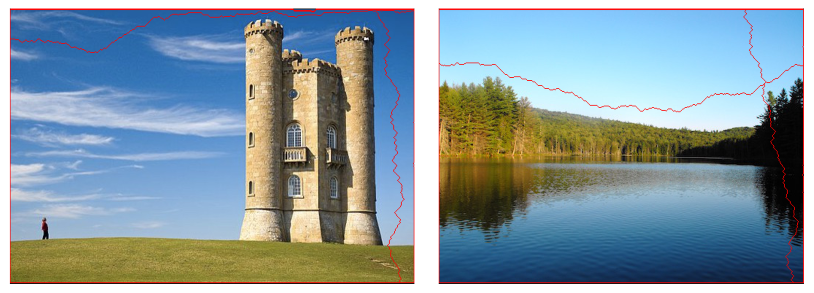
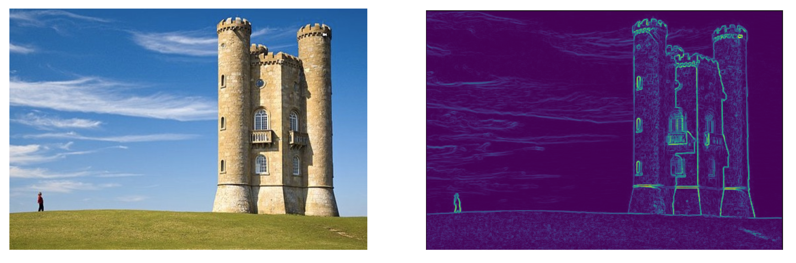
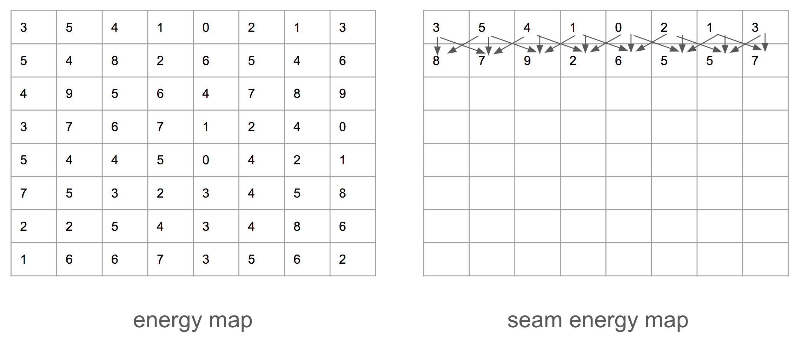
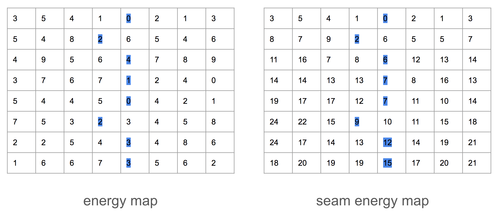
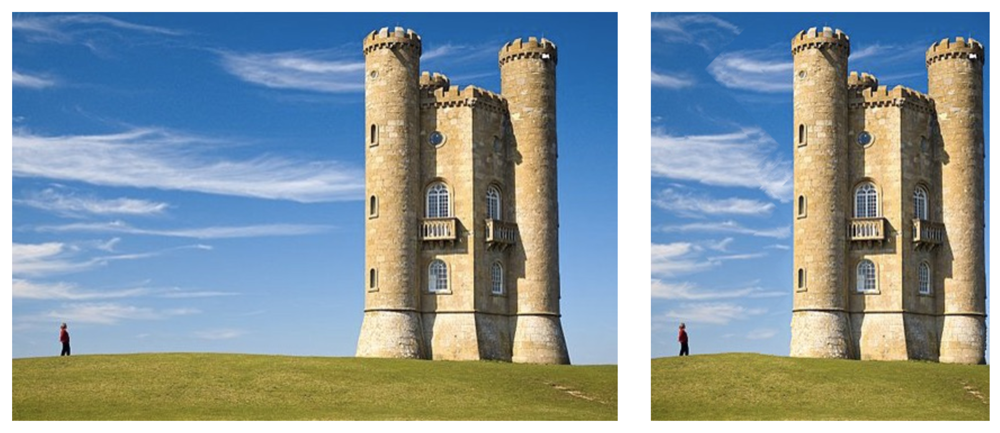
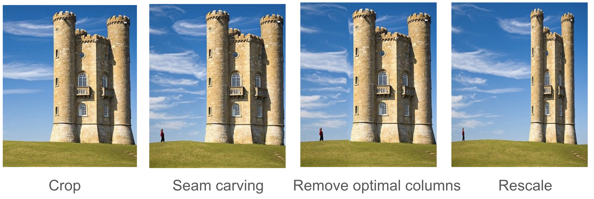
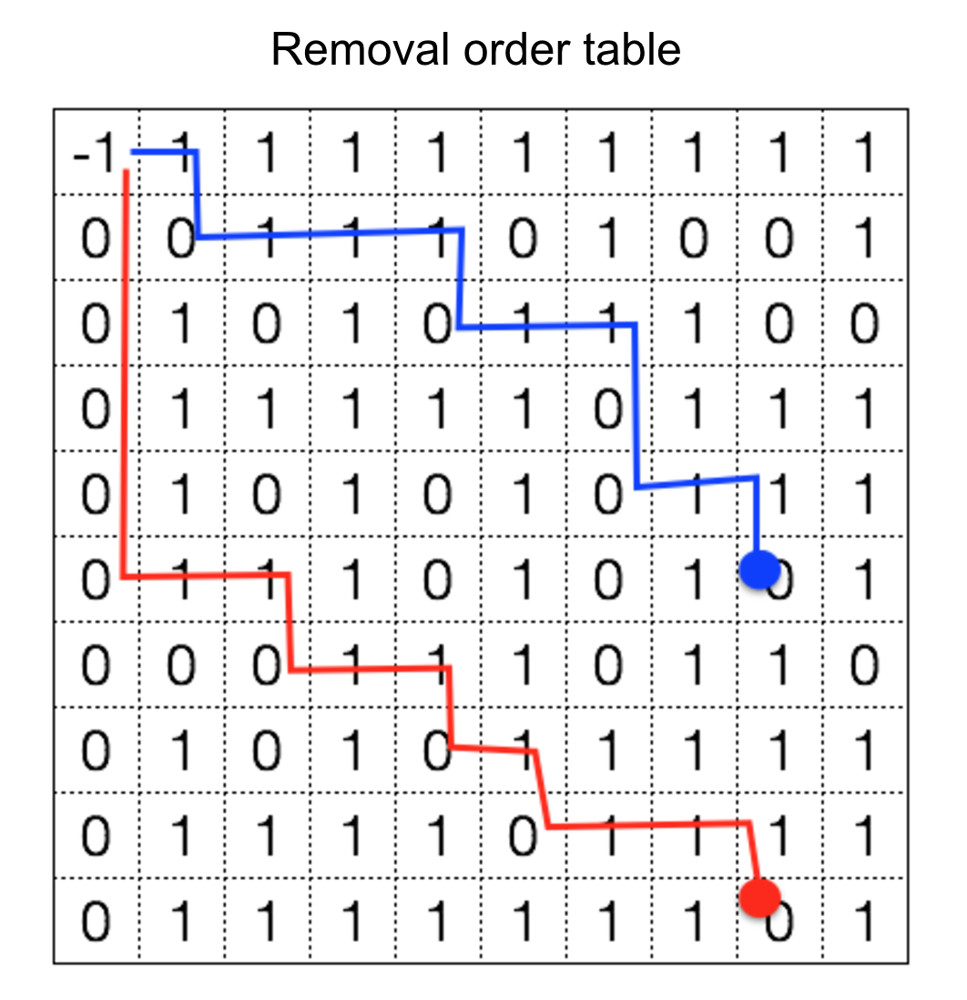
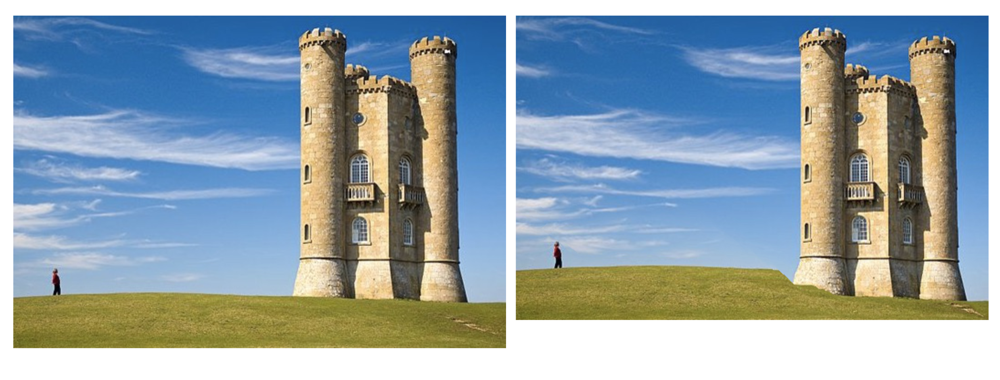
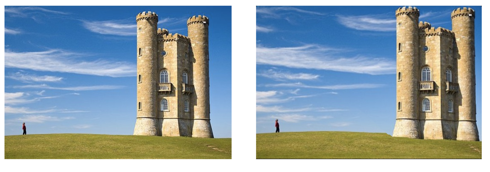
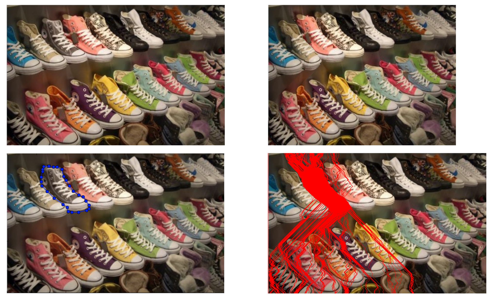

CS766 Project Page
--Seam Carving
Team Members:
Chang Guo
Haiyun Jin
Zhicheng Gu
Project Final report
View the presentation in Google Slides
Summay:
-

- 
- 
- 
- 
- 
- 
-
Since each pixel can be removed both by vertical or horizontal seams, the order seam removal of 2 dimensional resize matters. In this implementation, we employed dynamic programming method to find the best remove order.
 - 
- 
- 
References
- Avidan, Shai, and Ariel Shamir. "Seam carving for content-aware image resizing." ACM Transactions on graphics (TOG). Vol. 26. No. 3. ACM, 2007. https://doi.org/10.1145/1276377.1276390
- scikit-image Python package: http://scikit-image.org/
- Google Images